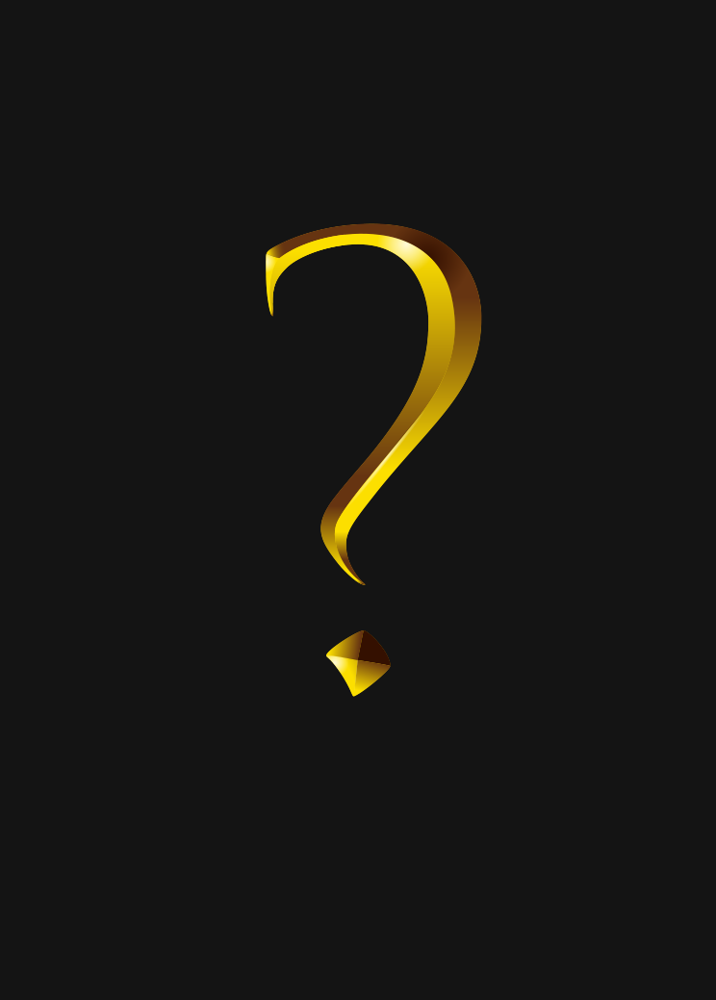

Вики проекта
Полное руководство по всем механикам сервера. Изучайте боссов, плагины и секретные крафты!
Эпические боссы сервера

Эндер-дракон теней
HP: 5000
Локация: Край
💀 Способности: Призыв теневых сфер, телепортация, дыхание тьмы
🎁 Дроп: Кристалл души (100%), Теневое сердце (35%), Эндер-артефакт (10%)
Крио-Страж
❤️ Здоровье: 3200 | 📍 Локация: Ледяные пещеры
💀 Способности: Ледяной шторм, заморозка, ледяная стена
🎁 Дроп: Ледяное сердце (100%), Кристалл мороза (50%), Замороженный тотем (15%)
Громовой титан
❤️ Здоровье: 4200 | 📍 Локация: Грозовые равнины
💀 Способности: Призыв молний, электрический щит, ударная волна
🎁 Дроп: Разряд артефакта (100%), Громовой камень (40%), Молния в бутылке (20%)
Владыка магмы
❤️ Здоровье: 2800 | 📍 Локация: Нижний мир
💀 Способности: Лавовый дождь, магматические големы, огненный взрыв
🎁 Дроп: Сердце магмы (100%), Огненный жезл (30%), Незер-кристалл (25%)
🔌 Кастомные плагины
MythicMobs
Мощный плагин для создания уникальных мобов и боссов. На сервере добавлено 40+ уникальных существ с собственными способностями и AI.
EcoSkills
Система прокачки умений. Повышайте уровни в добыче, рыбалке, стрельбе, магии и получайте пассивные бонусы.
CustomCrafting
Более 80 новых рецептов крафта. Создавайте легендарное оружие, броню и зелья по уникальным формулам.
AdvancedEnchantments
Зачарования до 10 уровня. Уникальные эффекты: вампиризм, молниеносность, телепортация при ударе.
EcoEnchants
Токенизированная система зачарований. Собирайте токены и применяйте их для улучшения предметов.
Lands
Система приватов с возможностью создания государств, налогов, войн и альянсов между игроками.
🛠️ Секретные крафты
✨ Клинок Рассвета
Рецепт: Незеритовый меч + Звезда Незера + 4 кристалла пустоты
Характеристики: Урон +12, Эффект "Свет" при атаке, +30% урона нежити
🧪 Эликсир неуязвимости
Рецепт: Золотое яблоко + Слеза гаста + Жемчуг Эндера + Бутылка воды
Эффект: Неуязвимость на 8 секунд, регенерация IV на 30 секунд
🔮 Тотем вечности
Рецепт: 3 тотема бессмертия + блок изумруда + сжатая тьма
Эффект: Сохраняет все предметы при смерти, телепортирует к месту возрождения
⚡ Молот Грома
Рецепт: Незеритовый топор + Громовой камень + 5 золотых блоков
Характеристики: При ударе призывает молнию, +40% урона по площади
🛡️ Щит Древних
Рецепт: Щит + Кристалл души + 3 алмазных блока + Теневое сердце
Характеристики: Блокирует 100% урона, отбрасывает врагов при блоке